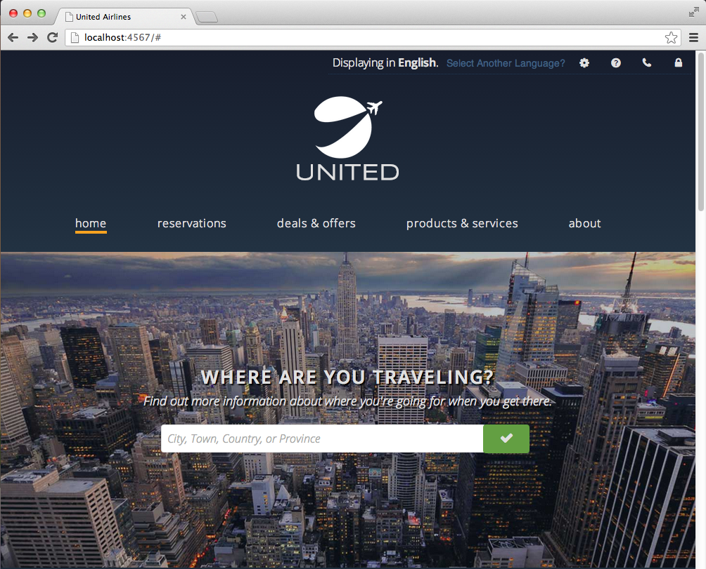
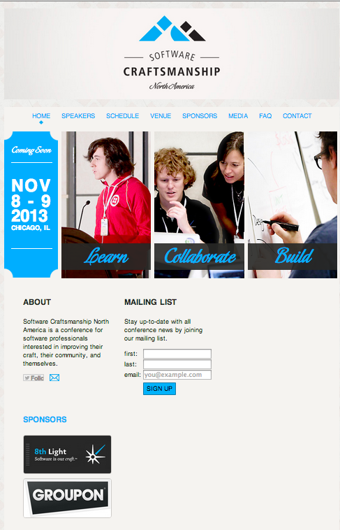
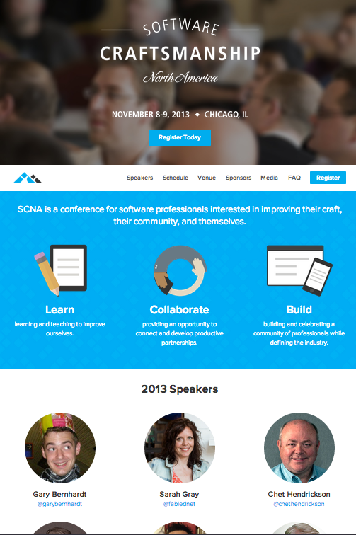
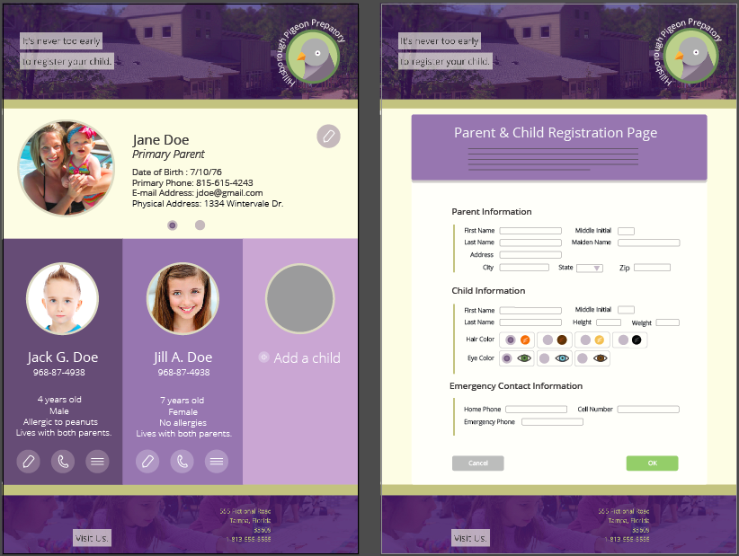
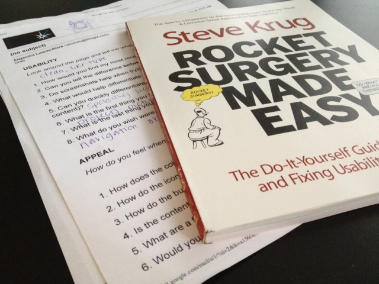

United Airlines Redesign
July 17, 2013

Recently, I was tasked with redesigning the United website for a small board of people within 8th Light. The parameters I was given were just to keep all of the links/information, or have a good reason for excluding/moving it. I was told to create an HTML page that had no functionality, and to just "go crazy" to demonstrate my style and what I think would be a good user experience. So, it was definitely fun.
Software Craftsmanship North America Website Redesign
June 25, 2013

Adam Kaplan (the other design apprentice) gave the SCNA website a little facelift. The website was originally done by Nick Meccia did the website from last year. It was super great, but we were asked to update it and change it to reflect current web trends and new web standards/practices. So, we broke the site up into sections to put emphasis on both our own creative potential, on the speakers, and on the attendees!
Partnership Project
June 03, 2013

Illustrator Mockups
May 22, 2013
These are some mockups I did for my IPM today. I am still working on the school registration project. The shot on the left is the control panel, while the shot on the right is the main registration form.
Wireframing
May 10, 2013
I am approaching the home stretch of my apprenticeship, which is really exciting. For the rest of my apprenticeship, I will be doing mock client projects. Since I was doing freelance work before coming to 8th Light (and still work on some select projects), I do have quite a bit of client experience, and consider it to be one of my strengths. Making someone's dreams and ideas come to fruition is exhilirating for me, even with the more "difficult" clients that I've had.
User Testing
April 26, 2013

Last week, I read the book Rocket Surgery Made Easy by Steve Krug. My project was then to take something that I've made and conduct a little study with some of my coworkers to see how its usability might be improved. I decided just to use my blog since it is the gateway to all of my other projects.
Javascript Clock
April 22, 2013
Click the screenshot below to see my project in action!

CSS Animations
April 10, 2013
Click the screenshot below to see my project in action!

Semantic HTML Table Project
April 05, 2013
Click the screenshot below to see my project in action!

Semantic Magazine Article
April 04, 2013
Click the screenshot below to see my project in action!

Click to see the original article.
{kind=link}
CSS Positioning
March 29, 2013
Click the screenshot below to see my project in action!

Inline, Block, and Inline-Block Elements
March 09, 2013
Click on the screenshot below to view my project in action!

Box-Object Model
March 06, 2013
Click the screenshot to view my project below.

Skill Assesment
February 24, 2013
Click the screenshot below to see my project in action!

Semantic HTML Menu
February 14, 2013

You can find the original menu here. The Refinery is one of our favorite restaurants in Tampa and is well-known for changing their menu up weekly to reflect their fresh farmers' market finds.